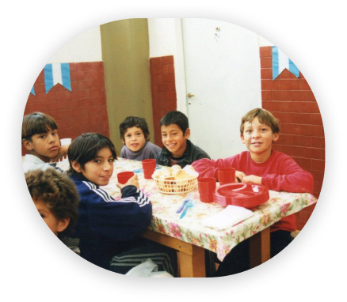
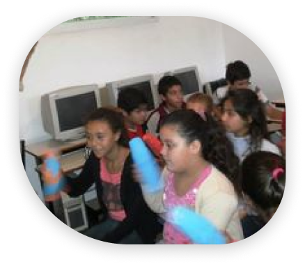
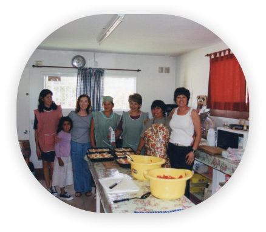
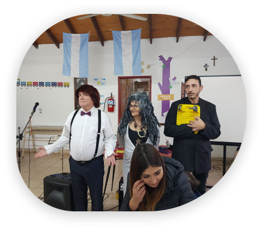

Realizamos actividades relacionadas con la formación en
principios y valores de nuestros chicos para que logren
vincularse sanamente con sus pares y la comunidad.
Recibimos aproximadamente entre 90 y 100 niños entre 4
y 17 años, que reciben alimentación saludable, realizan
tareas de refuerzo escolar y desarrollan aptitudes e
inquietudes personales.
Se dictan charlas orientadas a la formación acorde a los
distintos grupos etarios, derechos y responsabilidades
individuales, violencia en el noviazgo, bullying, grooming, etc.


Biblioteca
Con libros para todas las edades, texto,
consulta, novelas, cuentos, clásicos,
históricos, enciclopedias, diccionarios de
idiomas, etc.


Sala de Computación
Equipada con 10 máquinas con conexión Wifi,
donadas por la Universidad Siglo XXI.

Cocina
Equipada con horno y cocina industrial. Contamos
con todas las herramientas necesarias para
preparar comida a unos 100 niños
aproximadamente.

Salón de Usos Múltiples
Funciona como comedor, salón de actos,
salón para eventos y lo adaptamos según
las necesidades.